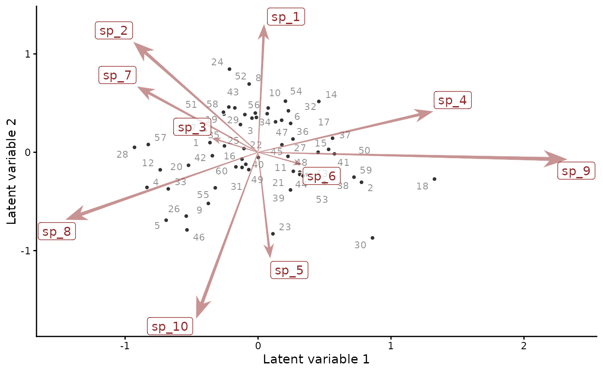
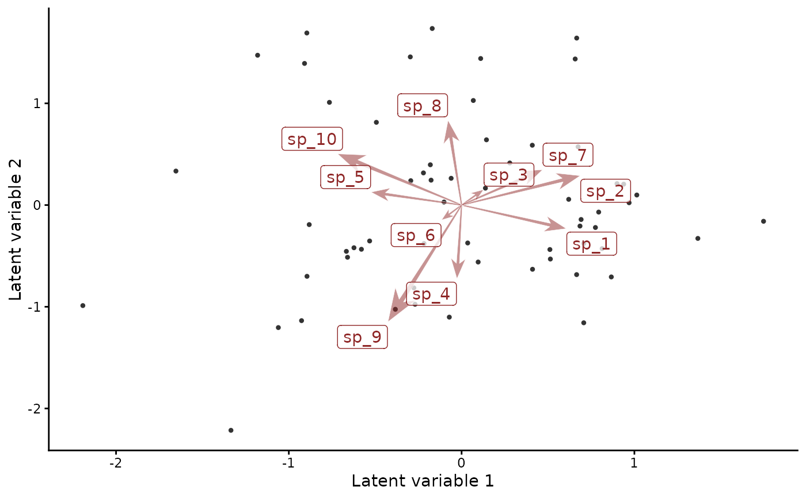

Plots the site scores and series loadings of a factor model on two
axes. Sites are the points on the fit's unit or time axis, labelled
by their values. Series, such as the species of a jsdgam() fit,
are arrows from the origin. Series that point the same way share
their residual variation. Arrows are tapered when ggarrow and
ggpp are installed.
Arguments
- object
A fitted
mvgamorjsdgammodel with at least two latent factors, set byn_lvinjsdgam()or in a trend constructor- ...
Unused. Anything passed here is refused.
- which_lvs
Two distinct integers: the axes to plot
- biplot
Logical.
TRUEdraws the series loadings with the site scores.FALSEdraws the site scores alone.- alpha
Number in
[0, 1]: the share of each singular value given to the site scores underrotation = "svd". The loadings take the rest.0.5scales sites and series alike. Values near 1 spread the sites, values near 0 spread the series (Hui 2016).- rotation
The basis of the axes:
"svd"Axes ordered by the variance of
LV %*% t(Z)they explain. The first two show the leading gradients."varimax"An orthogonal rotation under which each series loads on as few axes as it can. The axes then lend themselves to names.
"promax"An oblique rotation, as varimax with correlated axes.
"none"The identified factors themselves, centred.
Varimax and promax axes carry no variance order. Any two of them make a valid
which_lvs.- label_sites
Logical.
TRUElabels each site score with its unit or time value.- traits
NULL,"auto", or a data frame or matrix of series traits."auto"takes the traits ajsdgam(traits = ...)fit stores. Each numeric trait is regressed on the plotted loadings. Its arrow points the way the trait increases. Rows match the series byrownames(traits)when those name every series and by position otherwise. Drawn only withbiplot = TRUE.- trait_arrow_scale
Positive number. The longest trait arrow is
trait_arrow_scaletimes the longest loading arrow.
Value
A ggplot object. attr(p, "rotation") holds the rotated
scores and loadings, the rotation matrix rotmat (NULL for
"svd" and "none"), the method and n_lv.
Details
The plot starts from the posterior medians of the identified factors
and loadings. Factors with shared dynamics are identified by a
rotation to lower-triangular loadings, Z_tilde and
lv_trend_tilde (Heaps and Jermyn 2024). Factors with their own
dynamics are identified by an ordering and orientation of Z and
lv_trend. The Identification section of trend_constructors
describes both. Every rotation keeps the product LV %*% t(Z) the
model fitted.
The medians carry no posterior uncertainty into the plot. Axis signs
are arbitrary. Two fits may need an axis flipped before they agree.
compare_loadings() aligns the loadings of two fits.
A trend_map supplies the loadings as data. A rotation other than
"none" replaces them and warns on every call.
plot(object, type = "factors") shows the loadings the map declared.
References
Hui, F. K. C. (2016). boral: Bayesian ordination and regression analysis of multivariate abundance data in R. Methods in Ecology and Evolution, 7, 744-750. doi:10.1111/2041-210X.12514
Heaps, S. E. and Jermyn, I. H. (2024). Structured prior distributions for the covariance matrix in latent factor models. Statistics and Computing, 34, 143. doi:10.1007/s11222-024-10454-0
See also
plot.mvgam() with type = "factors" plots each factor's
path. residual_cor() gives the correlations among series the
factors imply. The
JSDM article interprets a biplot
of species loadings.
Other latent dynamics:
active_factors(),
compare_loadings(),
fevd.mvgam(),
irf.mvgam(),
posterior_transition_matrix(),
residual_cor(),
shared_variation(),
stability.mvgam()
Examples
# \dontrun{
# Gaussian responses of 10 species at 60 sites, driven by two
# latent factors
simdat <- sim_jsdgam(family = gaussian(), n_species = 10L,
n_sites = 60L, n_lv = 2L, seed = 3L)
mod <- jsdgam(y ~ env * series, data = simdat$data_train,
family = gaussian(), n_lv = 2L, chains = 2, silent = 2)
# Sites as points and species loadings as arrows
ordinate(mod)

# Varimax axes, on which each species loads on as few as it can
p <- ordinate(mod, rotation = "varimax", label_sites = FALSE)
p

attr(p, "rotation")$loadings
#> [,1] [,2]
#> sp_1 0.60548993 -0.2315881
#> sp_2 0.68630223 0.2883360
#> sp_3 0.12719789 0.1515715
#> sp_4 -0.02685917 -0.7239206
#> sp_5 -0.52357776 0.1271335
#> sp_6 -0.11555648 -0.1464999
#> sp_7 0.46866634 0.3473488
#> sp_8 -0.07828871 0.8324566
#> sp_9 -0.42613444 -1.1481722
#> sp_10 -0.71723983 0.5033344
# Next, residual_cor(mod) gives the species correlations the
# factors imply
# }